The big picture
One app, four steps
Everyone downloads the same Trucks2U app. What you see depends on who you are: someone who needs trucks, someone who drives one, or someone who runs a fleet.
1
Request
The paving company enters the job site, picks the work (haul off grindings, bring asphalt, or both), and chooses how many of each truck it needs.
2
Notify
Trucks2U sends the job to every vetted driver nearby with the right truck. Fleet owners see it too and can send their own trucks.
3
Accept
Drivers see the pay, the site and the distance, and tap Accept or Decline. The first ones to accept get the spots. Once every spot is filled, the job closes.
4
Haul and pay
The contractor watches trucks arrive on the map. Drivers snap load tickets. When the job ends, the contractor pays in one charge and rates the drivers.
Who uses it
I need trucks
Paving and construction companies that order trucks for a job.
I drive a truck
Owner-operators and drivers who want work without a broker in the middle.
I run a fleet
Brokers and companies with several trucks. They pick which of their trucks to send to each job.
Truck types and sample rates
| Truck | Typical load | Rate |
|---|
| 10 wheeler | About 15 tons | $115 per hour |
| 12 wheeler | About 19 tons | $130 per hour |
| Super dumper | About 26 tons | $150 per hour |
How Trucks2U makes money. Trucks2U keeps 5% of each job. A broker usually keeps 10 to 12%. On the sample job in this guide (three trucks for 9.5 hours, $3,895 total), the Trucks2U fee is $195, where a broker at 11% would have kept $428.
Every driver is vetted. Before anyone gets a job, we check their commercial driver's license, DOT medical card, insurance, truck registration and USDOT number.
I need trucks · part 1
Ordering trucks
Ordering trucks takes three taps, the same way you order a ride.
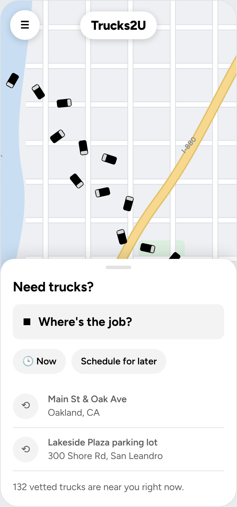
1
Home. The map shows vetted trucks near you right now. Tap Where's the job? or pick a recent site. Choose Now or Schedule for later.
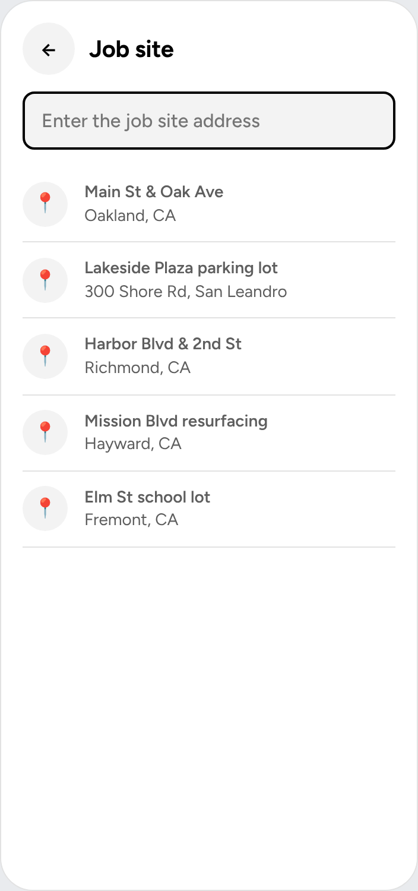
2
Job site. Type the address or tap one of your saved sites.
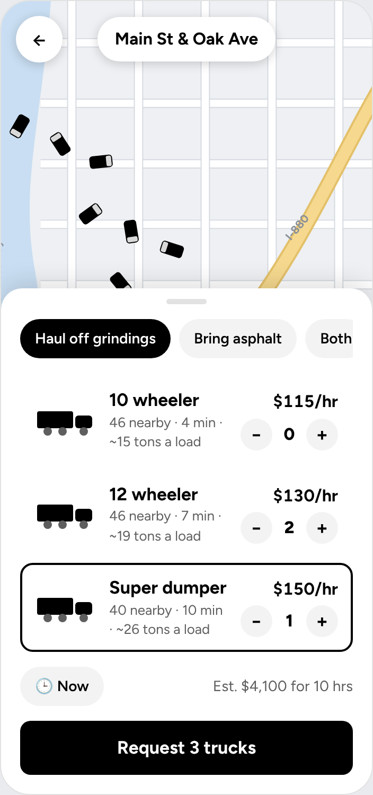
3
Pick your trucks. Choose the work (haul off grindings, bring asphalt, or both). Use + and − to set how many 10 wheelers, 12 wheelers and super dumpers you need. The app shows how many are nearby, how far away they are, and an estimated cost. Then tap Request.
I need trucks · part 2
Watching the job
After you request, you watch drivers accept and drive to your site on the map.
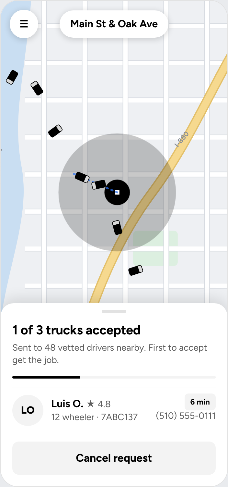
4
Finding trucks. The request goes to every vetted driver nearby. Each driver who accepts shows up in the list with their name, rating, truck and plate. You can cancel any time.
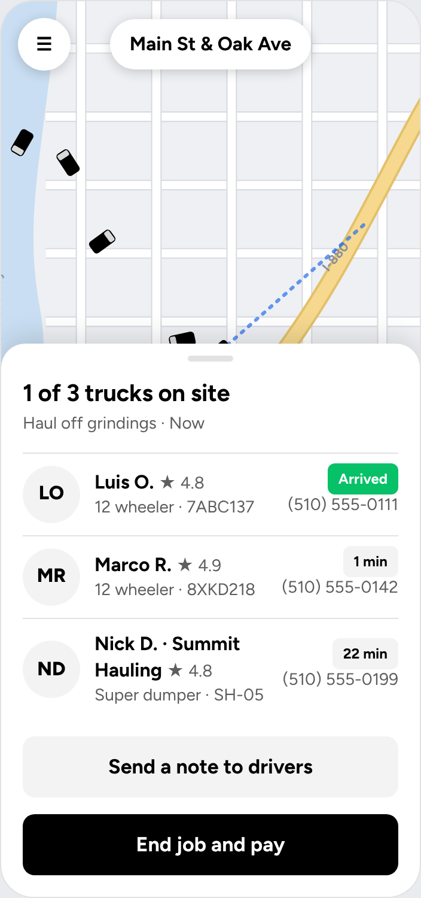
5
Trucks on the way. Once every spot is filled, you see each truck's arrival time and phone number. Tap Send a note to drivers to message the whole crew at once, for example "Hold at staging on Oak Ave".
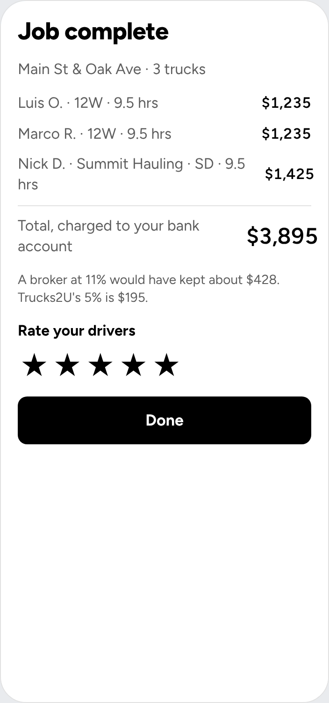
6
End job and pay. You see each truck's hours and cost, one total charged to your bank account, and how much you saved compared with a broker. Rate your drivers and tap Done.
I drive a truck · part 1
Getting a job
For drivers, the app works like a rideshare driver app. Go online, wait for a request, and accept it or turn it down.
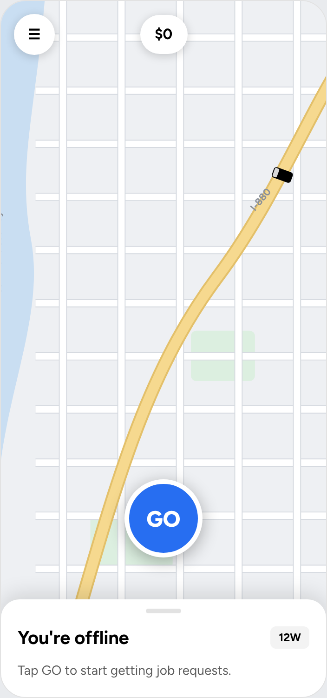
1
Offline. You won't get requests until you go online. Tap the blue GO button. The top of the screen shows what you've earned today.
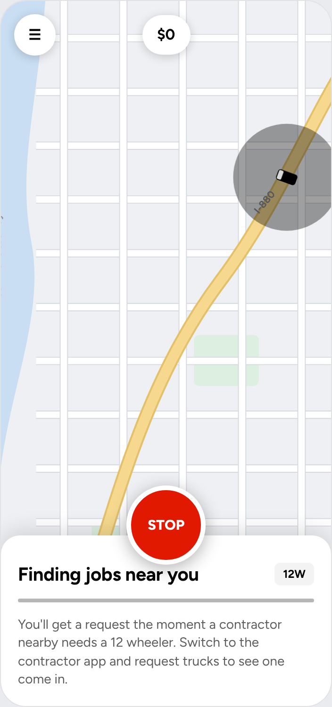
2
Finding jobs. You're online. As soon as a contractor nearby needs your type of truck, you get a request. Tap STOP to go offline.
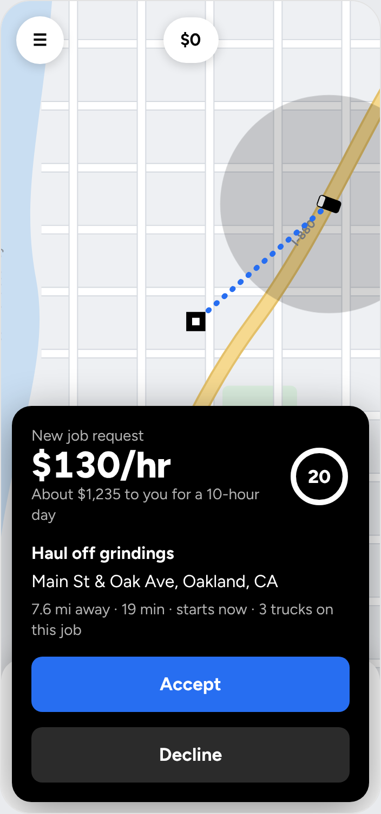
3
New job request. You see the hourly pay, the estimated total for the day, the work, the site, the distance, and how many trucks are on it. You have 20 seconds to tap Accept or Decline. If others fill the job first, the request disappears.
I drive a truck · part 2
Doing the job and getting paid
After you accept, the app takes you to the job, keeps track of your tickets, and shows what you earned.
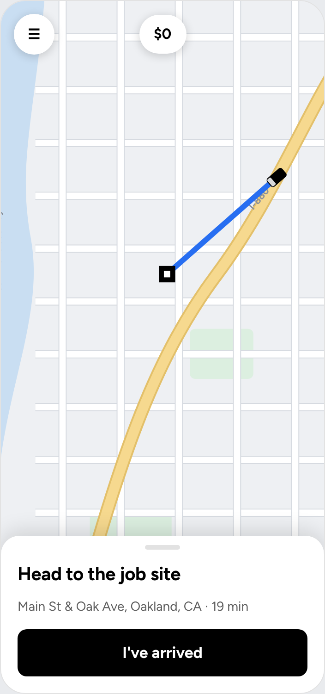
4
Head to the job site. The map shows your route and arrival time. Tap I've arrived when you get there.
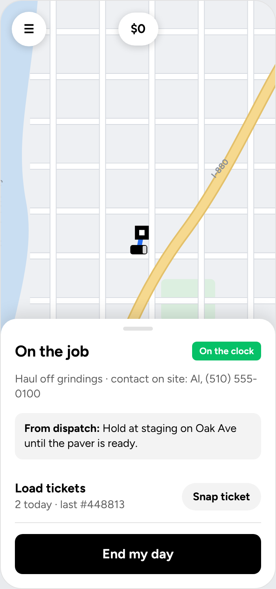
5
On the job. You're on the clock. You see the on-site contact and any notes from dispatch. Tap Snap ticket to photograph each load ticket. Tap End my day when you're done.

6
Nice work. You see your hours, your rate, the 5% Trucks2U fee, and what you earned. The money goes to your bank within 2 business days after the contractor approves your hours and tickets.
I run a fleet
For brokers and fleet owners
A fleet owner sees jobs the same way a driver does, but sends their own trucks instead of driving. The top of the screen always shows how many of your trucks are working.
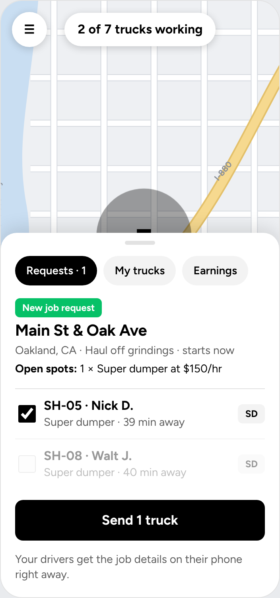
1
Requests. New jobs nearby show the site, the work and the open spots. Check off which of your free trucks to send, then tap Send. Your drivers get the job details on their phones right away.
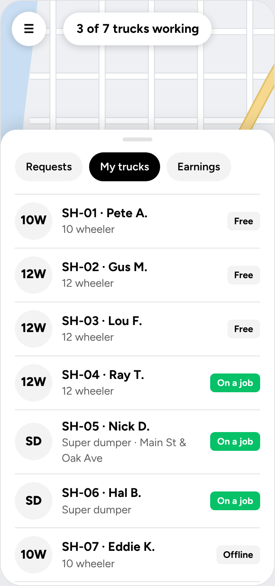
2
My trucks. Every truck in your fleet, who is driving it, and whether it's free, on a job, or offline.
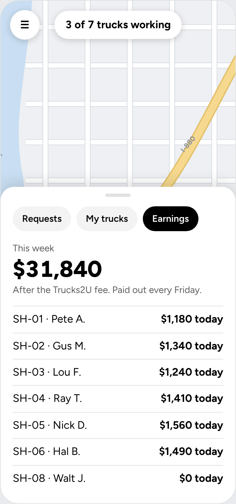
3
Earnings. This week's total after the Trucks2U fee, and today's earnings for each truck. Payouts go out every Friday.
Still to decide. The pricing for fleets is not set yet. The earlier plan was a per-truck fee (for example $15 per truck per day) for brokers who dispatch their own trucks, and the normal 5% on Trucks2U jobs.
I drive a truck · sign-up
How drivers get vetted
New drivers sign up in three short steps. Nobody gets a job until a person on our team has checked every document.
1
You. Name, mobile number and city.
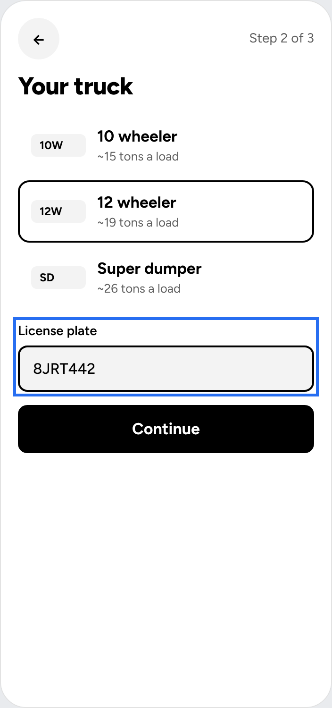
2
Your truck. Truck type and license plate.
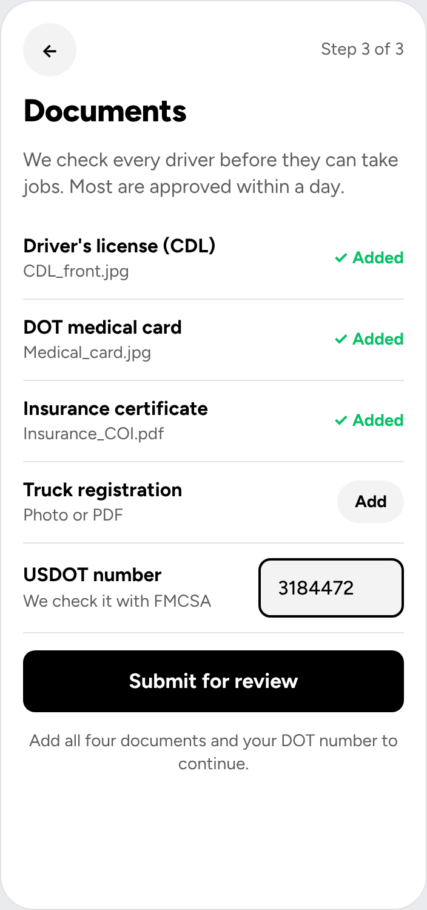
3
Documents. Photos of the CDL, DOT medical card, insurance certificate and truck registration, plus the USDOT number. We check the USDOT number with the FMCSA.
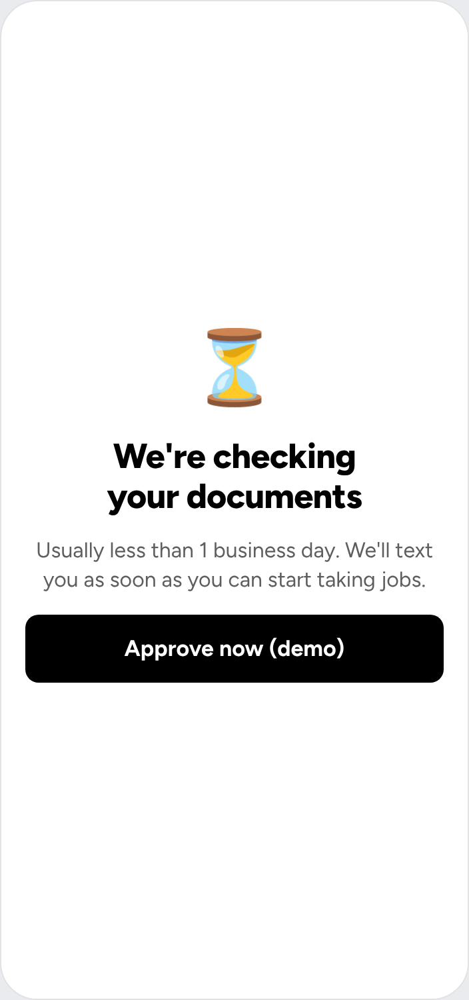
4
We're checking. Approval usually takes less than 1 business day. The driver gets a text when it's done. (The prototype has an "Approve now" button so you can skip ahead.)
Try it yourself
Using the prototype
The prototype runs in any web browser on a phone or computer. It's a working mock-up for showing people and deciding what to build. It doesn't send real notifications or move real money yet.
Open it
- Link: claude.ai/artifact/Xp6EWSHE75fxyXoPQy5o67
- The code is in your GitHub repository Aperez1248/Trucks2you, in the
app folder.
A good way to demo it
- Tap I drive a truck, approve the sign-up, and tap GO so you're online.
- Open the menu, tap Switch account, choose I need trucks, and request a few trucks.
- Switch back to the driver. The job request pops up. Tap Accept.
- Switch to I run a fleet. The same job is waiting under Requests. Pick a super dumper and send it.
- Switch back to the contractor to watch the trucks arrive, then end the job and pay.
What's simulated
- The 20 other drivers, the Summit Hauling fleet, the job sites, the map and all the prices are sample data.
- Other drivers accept on their own a few seconds apart. The app holds the last spots open for about 25 seconds so you have time to accept them yourself.
- Time runs fast. One minute on screen is about 1.5 seconds in real life.
What a real version needs
- Phone apps for iPhone and Android with push notifications
- Live GPS from drivers' phones
- Document checks: an FMCSA lookup for USDOT numbers and a review screen for our team
- Payments: charging contractors and paying drivers and fleets by bank transfer